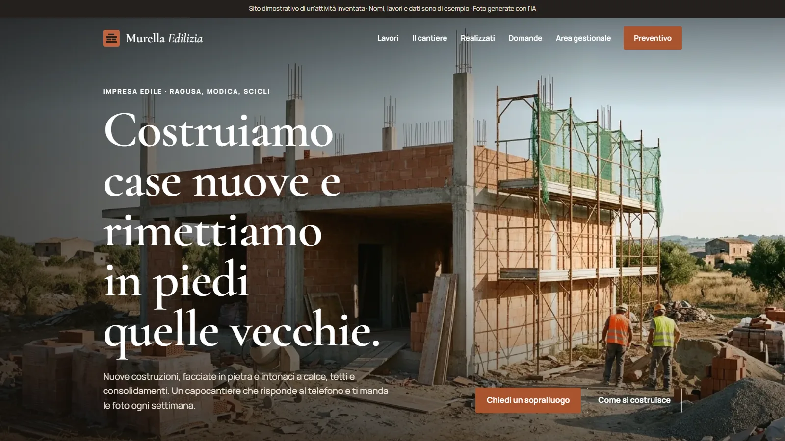
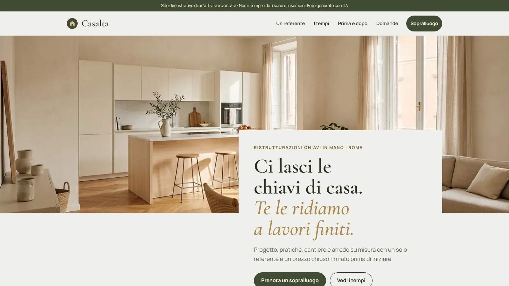
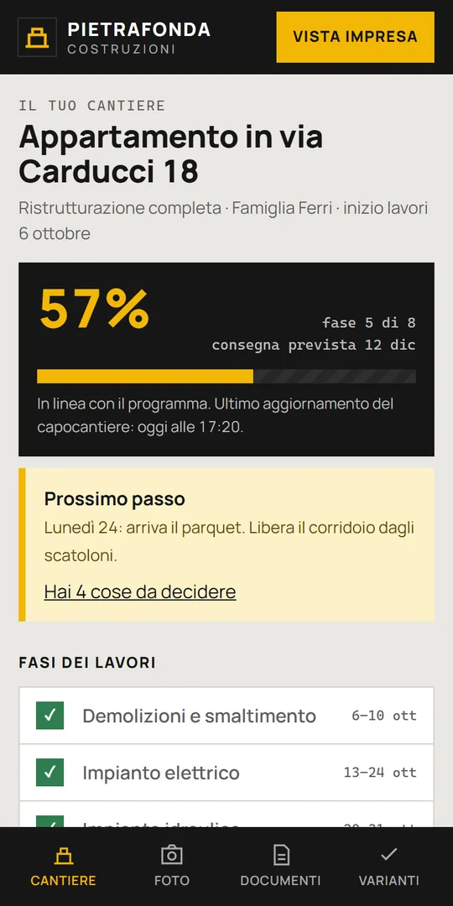
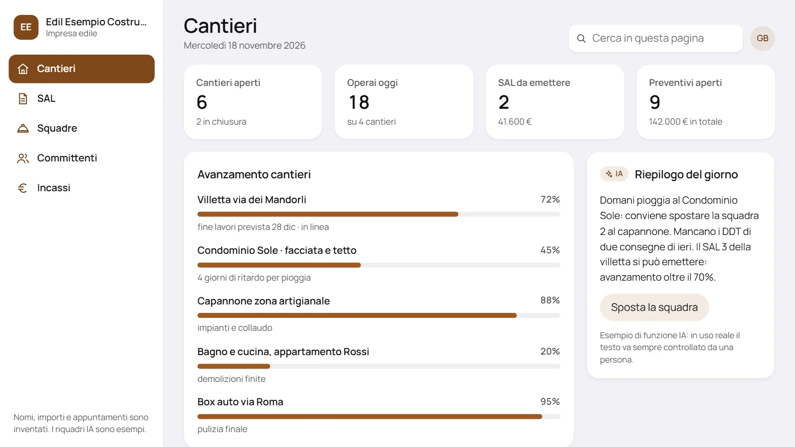

Sito con richiesta guidata
Il cliente sceglie il tipo di lavoro, indica metri e foto, e la richiesta ti arriva completa. Con il prima e dopo dei tuoi cantieri.
Vai al servizioHome / Per il tuo settore / Imprese edili e ristrutturazioni
Casa e impiantiPer imprese edili, ristrutturazioni chiavi in mano e general contractor.

Il cliente chiede a che punto sono i lavori, le varianti si decidono a voce in cantiere, i SAL si preparano la sera. E le richieste di preventivo arrivano senza misure né foto.
Il cliente sceglie il tipo di lavoro, indica metri e foto, e la richiesta ti arriva completa. Con il prima e dopo dei tuoi cantieri.
Vai al servizioIl committente vede l'avanzamento e le foto della settimana, e approva le varianti per iscritto.
Vai al servizioCantieri con l'avanzamento, SAL da emettere, squadre e presenze del giorno, preventivi e committenti.
Vai al servizioDallo scavo alla consegna in un minuto, o il prima e dopo di una stanza. Solo foto vere dei tuoi lavori.
Vedi i formati videoAttività inventate, costruite da noi: le apri dal telefono o dal computer e le provi. Le foto delle demo sono generate con l'IA.
La casa si costruisce strato dopo strato mentre scorri, prima e dopo di una facciata e accesso all'area gestionale.
Apri la demo
Sito aziendale · Ristrutturazioni chiavi in manoUn solo referente, cronoprogramma di dodici settimane che si riempie allo scorrimento e prima e dopo di una cucina.
Apri la demo
Area cliente e gestionale · Impresa edileIl cliente segue il cantiere e approva le varianti; l'impresa vede tutto nel gestionale.
Apri la demo
Gestionale · Impresa edileCantieri con l'avanzamento, SAL da emettere, squadre e presenze del giorno, preventivi e committenti.
Apri la demoFormati da ordinare: li montiamo con il materiale che hai già, anche con l'IA. Per ognuno trovi cosa si vede e quanto dura.
I lavori dei clienti li mostriamo in call, con il loro permesso.
Raccontaci la tua attività. Prima vedi una proposta, poi decidi.